Seresi
Introducción
Contenido para el Instagram de Seresi, marca de blends de té, yerbas y alfajores artesanales, desarrollado como diseñadora freelance en Studio Veta. Carruseles para el lanzamiento de su tienda online, la campaña Cyber Seresi, el anuncio de una nueva etapa y la presentación de productos, con un sistema visual en bordó y tonos cálidos.
Mi participación
- Diseño de carruseles para Instagram
- Piezas de campaña (Cyber Seresi)
- Presentación de productos
Todo Seresi en un mismo lugar · Tienda online
01 / 05
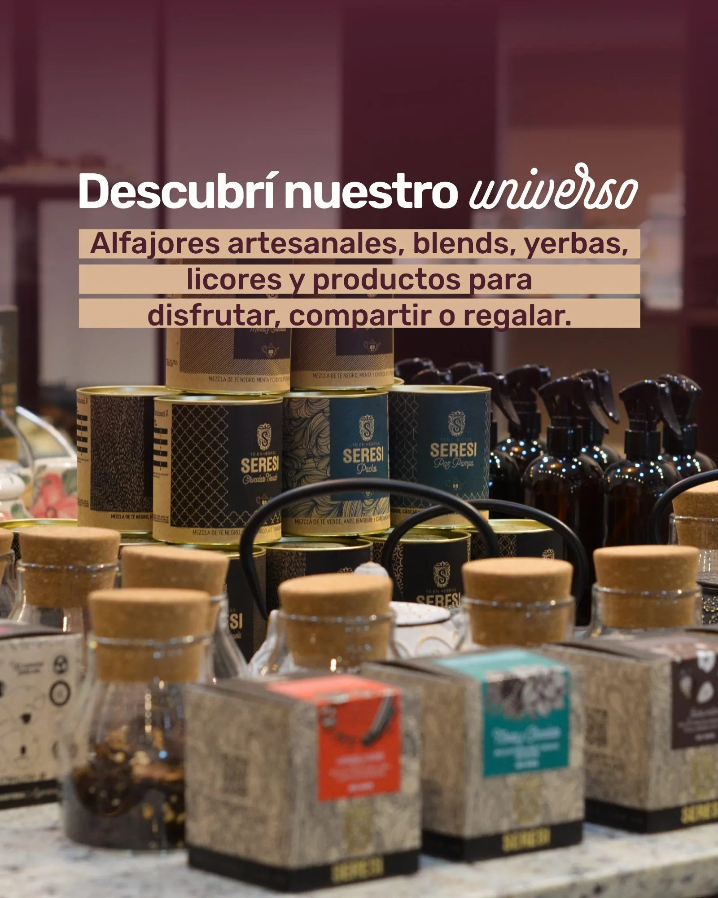
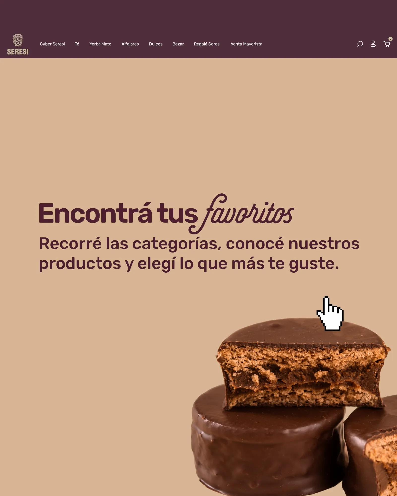
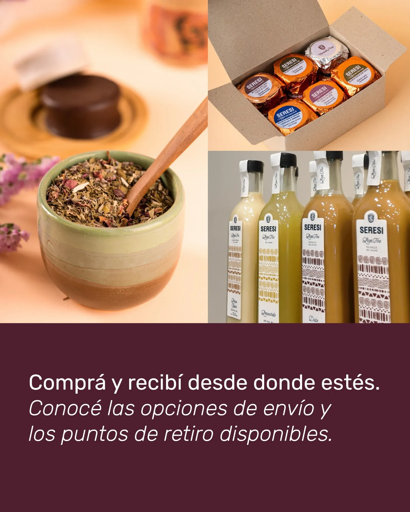
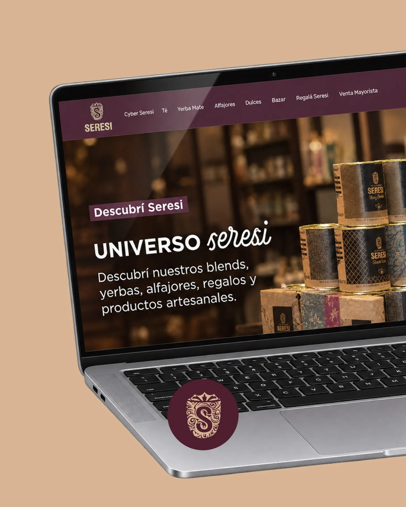
Cyber Seresi
01 / 03
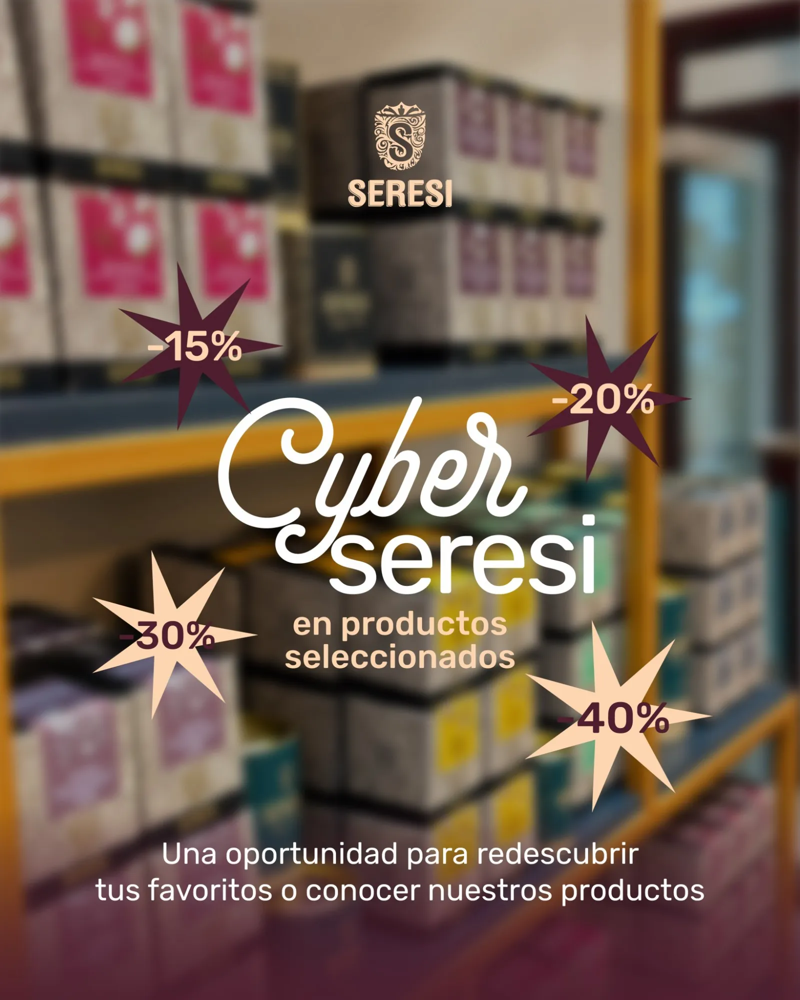
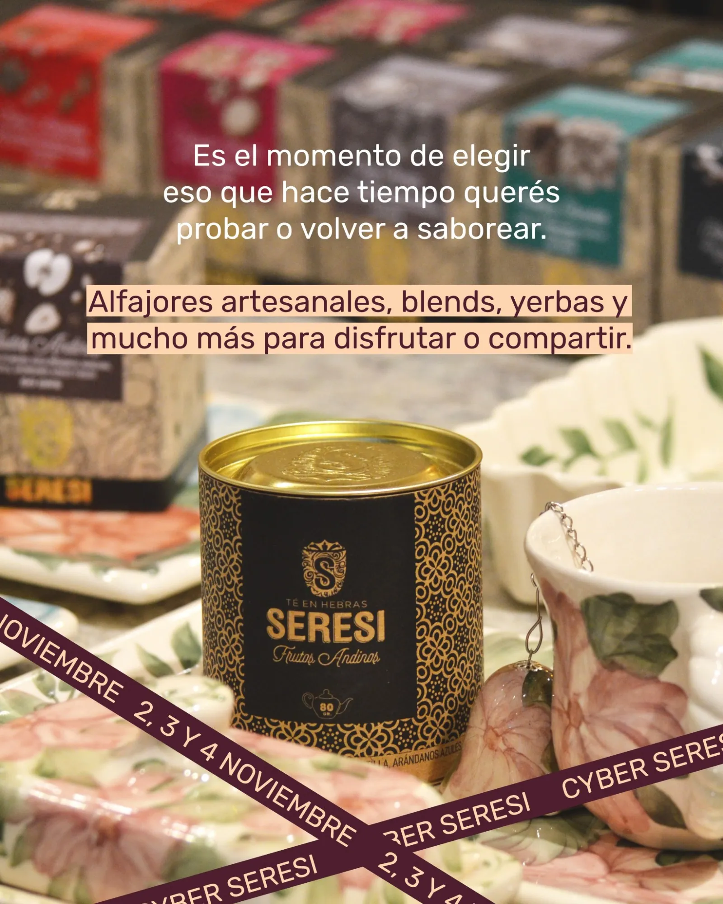
Una nueva etapa
01 / 04
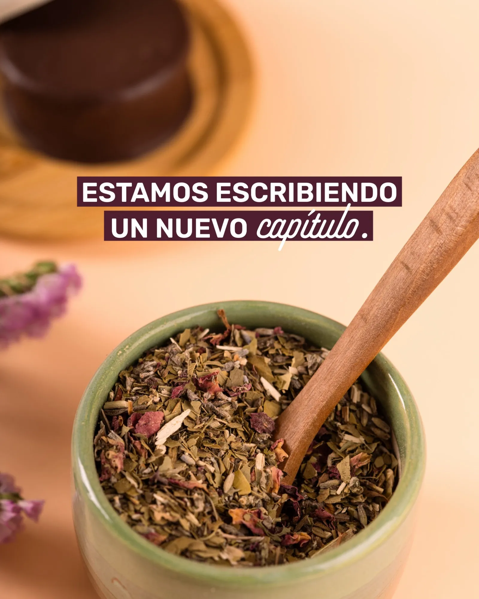
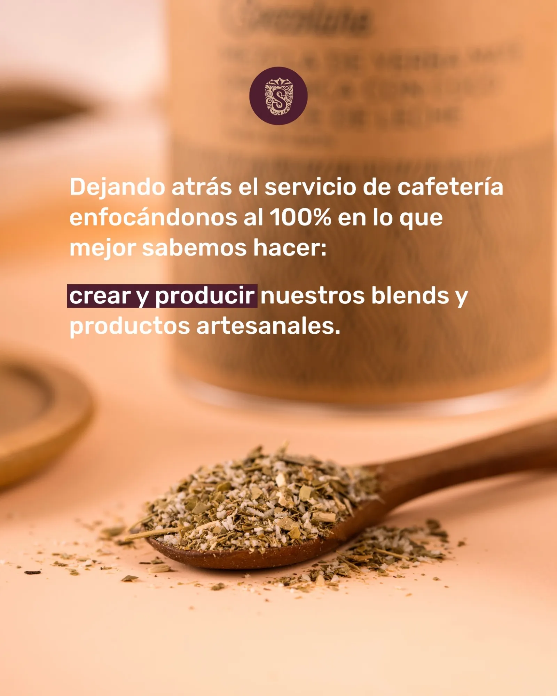
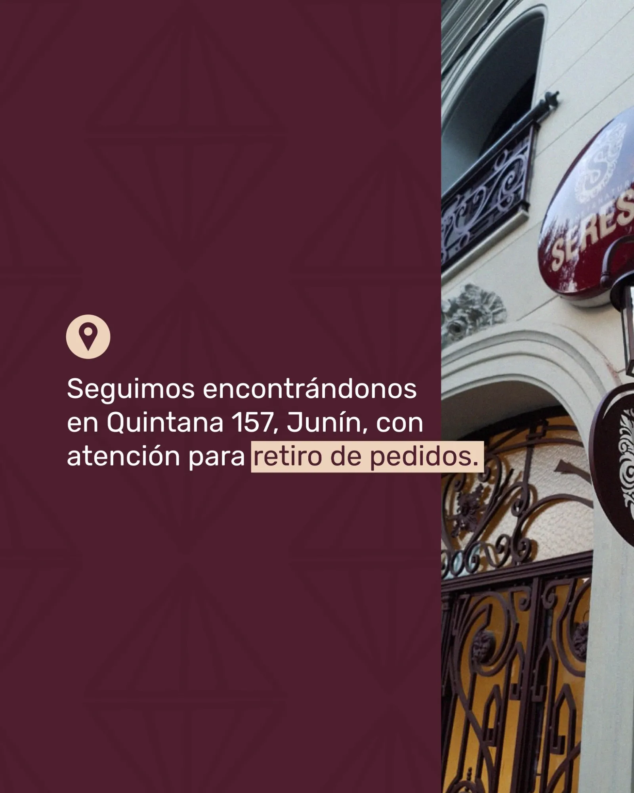
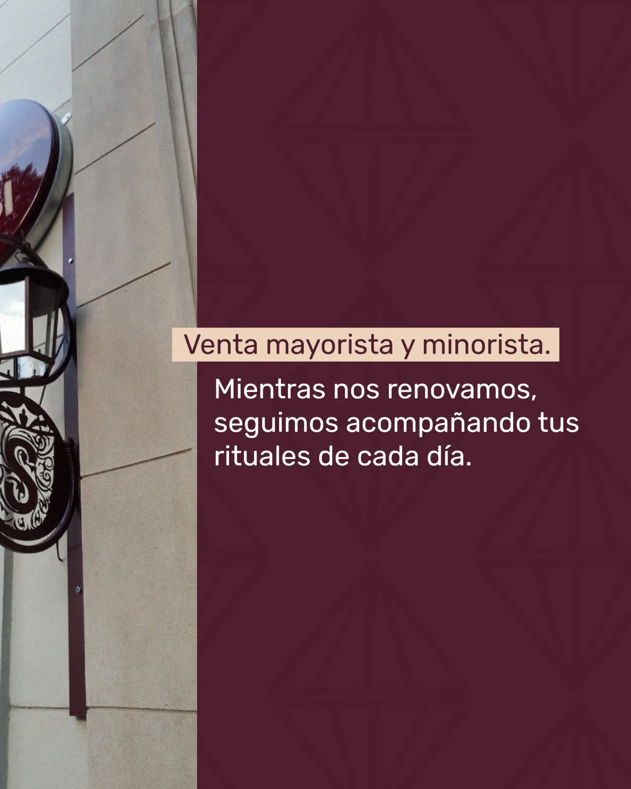
Blends
01 / 03
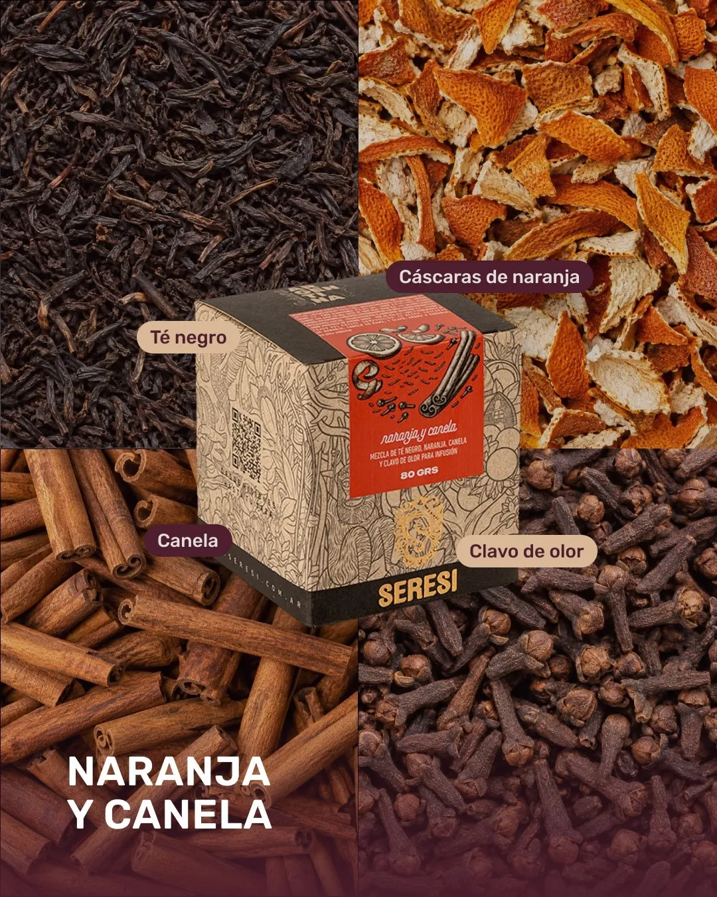
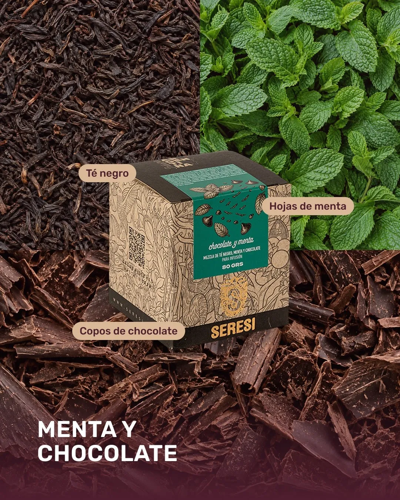
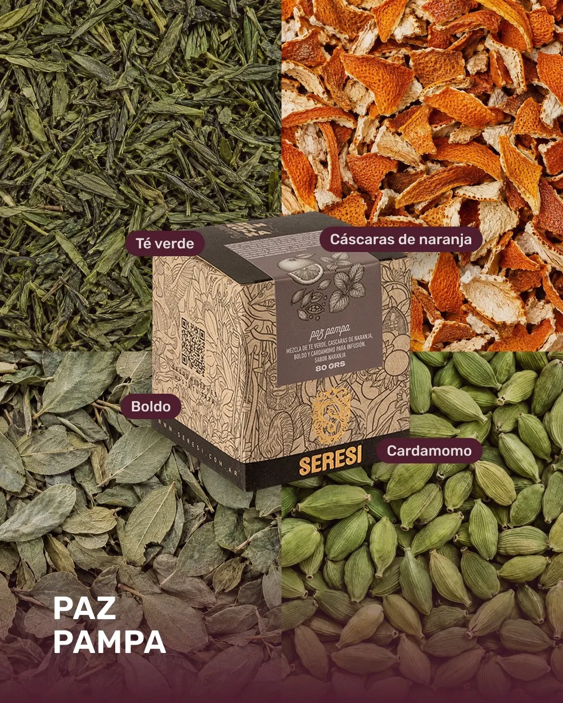